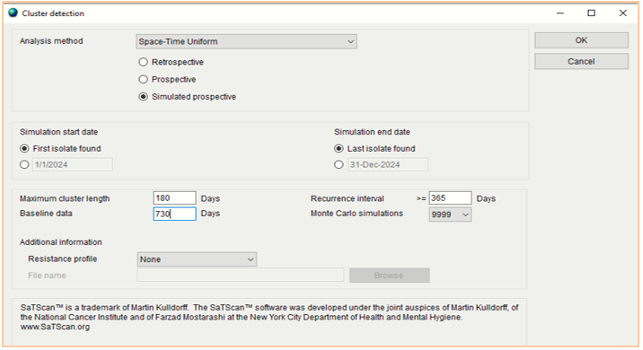

UNIT 1 - ARSRL SaTScan and Whole Genome Sequencing Enhanced Outbreak Investigation Protocol
OUTLOOK
Unit 1 describes the rationale and the steps on the conduct of outbreak investigation of ARSRL featuring the SaTScan software of WHONET and Whole Genome Sequencing. At the end of this unit, the participants shall be able to:
recognize the rationale of the conduct of the outbreak investigation protocol; and
enumerate the steps of the ARSRL outbreak investigation protocol.
LESSON PROPER
Background
Antimicrobial Resistance (AMR) is the change that occurs over time among bacteria, viruses, fungi and parasites where these organisms no longer respond to medicines making infections harder to treat and increasing the risk of disease spread, severe illness and death. [1] AMR is a serious public health threat because of its far reaching and serious implications in health care as well as economies. AMR hampers the control of infectious diseases because patients remain infectious for a longer time increasing the risk of spreading resistant microorganisms to others. AMR increases the cost of health care as more expensive therapies must be used when infections become resistant to first-line medicines. Infections due to resistant microorganisms increases economic burden to families and societies as it often results in longer duration of illness and treatment.
The DOH-ARSP is a sentinel laboratory-based antimicrobial resistance surveillance on aerobic bacteria from clinical specimens. Currently participating in the program are 24 sentinel sites, and 2 gonococcal surveillance sites, representing 16 out of the 17 regions of the country. The surveillance collects data on culture and antimicrobial susceptibility from its 24 sentinel sites and 2 gonococcal surveillance sites. Case finding is based on priority specimens sent routinely to sentinel sites laboratories for clinical purposes
All sentinel sites implement standard methods for culture and susceptibility testing based on the WHO Manual for the Laboratory Identification and Antimicrobial Susceptibility Testing of Bacterial Pathogens of Public Health Importance in the Developing World 3 and the updated Clinical Laboratory Standards Institute (CLSI) references for antibiotic susceptibility testing and quality control. Panel of antibiotics for testing are based on the latest CLSI recommendations. In the analysis of antimicrobial susceptibility testing, an isolate is considered resistant to an antimicrobial agent when tested and interpreted as resistant (R) in accordance with the clinical breakpoint criteria based on the most recent Clinical Laboratory Standards Institute (CLSI) references for antibiotic susceptibility testing [2] The culture and antimicrobial susceptibility test results are encoded using a database software called WHONET. WHONET is Windows-based database software developed by the WHO Collaborating Centre for Surveillance of Antimicrobial Resistance based at the Brigham and Women’s Hospital in Boston for the management and analysis of microbiology laboratory data with a special focus on the analysis of antimicrobial susceptibility test results. Using a standard format, routine culture and antimicrobial susceptibility test results are sent through automatic data transfer by the sentinel sites to the coordinating laboratory of the program – the Antimicrobial Resistance Surveillance Reference Laboratory (ARSRL) at the Research Institute for Tropical Medicine.
The ARSRL’s Data Management Unit manages the cleaning, analysis, storage and security of the program’s surveillance data. Sentinel sites likewise send isolates with unusual antimicrobial susceptibility patterns to ARSRL for phenotypic and genotypic confirmatory testing. At the reference laboratory, all isolates with unusual susceptibility patterns received for confirmatory testing are re-identified using both automated (Vitek) and conventional methods. Both minimum inhibitor concentration (MIC) - via automated method (Vitek) and gradient E-test, and disk diffusion are employed in antimicrobial susceptibility testing. As indicated, additional testing is done for specific antibiotics which are not included in AST card in use in the reference laboratory and for susceptibility testing for specific bacteria such as N. gonorrhea which requires manual AST methods. Serotyping for S. pneumoniae, H. influenzae, Salmonellae, Shigellae and Vibrio cholerae were done for 2022. Further, for 2022, select isolates with resistance phenotype which have not been previously reported or have been only rarely reported to date underwent whole genome sequencing (WGS) at the Antimicrobial Surveillance Reference Laboratory (ARSRL). The genomic characterization of these isolates is meant to allow for the understanding of resistance mechanisms of these isolates as well as their potential for spread in order to inform control and prevention measures. Beginning January 2018, sentinel sites transmit culture and susceptibility data daily to the reference laboratory (ARSRL) through ARSP ftp server using WinSCP. The automated data transfer facilitates prompt identification by the ARSRL of resistant isolates of public health importance as well the identification of clustering of cases and potential outbreaks among sentinel sites.
SaTScan is a free cluster-detection software application embedded in WHONET which is used by epidemiologists globally to describe spatial clusters of infectious and chronic disease, as well as disease vectors and risk factors. The software can identify whether the infection is randomly distributed over space, over time or over space and time. Moreover, it allows the evaluation of the statistical significance of disease cluster alarms. The study of Natale et al. (2017), in a health-care facility in Italy showed that WHONET-saTScan was able to detect higher number of potential outbreaks as compared with the traditional epidemiological approach of investigation.[3] Moreover, Huang et al. (2010) stated that WHONET-SaTScan rapidly detected the two previously known gram negative pathogen clusters and identified six Methicillin Resistant Staphylococcus aureus (MRSA) and four Vancomycin Resistant Enterococci (VRE) clusters that were previously not recorded in the hospital facility.[4]
This software coupled with the use of whole genome sequencing (WGS) are the emerging tools for outbreak investigation. WGS refers to the construction of the complete nucleotide sequence of a bacterium. This technique enables the analysis of the entire DNA sequence of the genome including the non-coding regions of DNA. Moreover, it has the capacity to identify functionally important sequence variants that affects gene expression. The advantages and functionality of WGS delivers ultimate high resolution genotypic method which makes it a powerful approach for outbreak investigation together with epidemiological approach.
Investigation Objectives
General Objective
- To utilize WGS to investigate clustering of isolates detected in sentinel sites.
Specific Objectives
To detect clustering of isolates in the sentinel sites through any of the following route:
Using WHONET SaTScan
Alerts from site laboratory personnel
Alerts from site IPCC
To perform whole genome sequencing on isolates included in select clusters detected and verified through SaTScan.
To evaluate the genomic characteristics of isolates in a cluster to confirm the occurrence of an outbreak.
Rationale/ Significance
An outbreak of an infectious disease can have a tremendous effect on people’s health, national economy, and social wellbeing, thus early discovery of an infectious disease allows for local epidemic containment, reducing negative public health impact. Routine epidemiological assessment alone may not sufficiently provide information to allow targeted control of the infection. The integration of machine learning such as SaTScan in laboratory management system in a surveillance program allows the real time spatio-temporal detection of bacterial isolate clustering. Furthermore, coupled with the distinctive ability of whole genome sequencing and bioinformatics analyses of these cluster isolates confirms the occurrence of an outbreak. The use of SaTScan and WGS allows the reference laboratory to document and provide laboratory confirmation of the circulating agent of HAI and its resistance profile as well as the routes of transmission.
Methodology
1. Initial Alerts on Cluster Detection
The initial detection of increase in number and/ or clustering of isolates at the sentinel sites can be through any of the following: a) weekly SaTScan analysis; b) alerts from site laboratory personnel; and c) alerts from site IPCC. Alerts from sentinel site laboratory and IPCC personnel can be through several means of communication including personal communication with an ARSRL staff via phone call, SMS, or email. Upon raising of alerts by sentinel site IPCC and laboratory personnel, sentinel sites will implement due response in accordance with their hospital’s policy. Cluster alerts from sentinel site will be further verified by ARSRL through the conduct of SaTScan analysis on the sentinel site’s regular data and results of the verification will be shared with the sentinel site.
2. Verification of Alerts at ARSRL Using SaTScan
The Data Management Unit (DMU) of ARSRL routinely conducts the SaTScan analysis every Friday of the week on the WHONET data transferred by the sites on a daily basis. Primarily, in running the SaTScan in WHONET software, cluster alerts were determined with “resistance profile” as summary row input. To confirm the detection of cluster based on identical resistance profile, the analysis is on “resistance profile” with “include cluster alerts”. In Figure 1, the specific analysis method to be used is “Space-Time Uniform – Simulated prospective”. The “maximum cluster length” and “baseline data” will be set at 180 days and 730 days respectively. On the other hand, the “recurrence interval” will be set at 365 days and “Monte Carlo simulations” at 9999.

SaTScan analysis is not limited to the organisms listed in Table 1. Cluster detection can also be performed on other bacterial species of interest.
Table 1. List of isolates regularly tested on SaTScan analysis.
| Escherichia coli | Vibrio cholerae | Shigella species | Burkholderia cepacia |
| Klebsiella pneumoniae | Haemophilus influenzae | Neisseria meningitidis | Enterococcus faecalis |
| Pseudomonas aeruginosa | Streptococcus pneumoniae | Neisseria gonorrhoeae | Enterococcus faecium |
| Acinetobacter baumannii | Streptococcus viridans | Salmonella species | Bacteroides fragilis |
| Staphylococcus aureus | Moraxella catarrhalis | Serratia marcescens | Campylobacter coli |
| Campylobacter jejuni | Corynebacterium species | Listeria monocytogenes | Proteus mirabilis |
| Staphylococcus epidermidis | Citrobacter freundii | Enterobacter cloacae | Enterobacter aerogenes |
3. Selection of SaTScan confirmed clusters that will undergo Whole Genome Sequencing enhanced investigation
In view of the limited resources, only select clusters will be further investigated through WGS. The clusters detected by saTScan will be evaluated with the set criteria The isolate shall satisfy the two primary criteria and at least one of the secondary criteria. All isolates that fit into the criteria will be included in the analysis.
Should meet the following primary criteria:
The isolates are target organism from specimen sources based on Basic Laboratory Procedures in Clinical Bacteriology of WHO and CLSI. [10]
For isolates from urine and respiratory specimens, there should be sufficient level of growth on culture to be considered as causative agent of infection
At least one epidemiological information shows a potential transmission pattern such as
Close isolation times
Overlapping locations
Must include at least one of the following secondary criteria:
Involves the vulnerable population
Neonates, infants, and children under 5 years of age
Elderly
ICU patients
Agents of food and water-borne diseases
Salmonella Typhi
invasive non-typhoidal Salmonella
Shigella sp
Vibrio cholerae
Isolates have the following resistance profiles:
Organism or organism group Antimicrobial agents and resistance phenotype Enterobacterales • XDR
• Carbapenem R
• Colistin/polymyxin R
Salmonella and Shigella sp • Cefotaxime R
• Ceftriaxone R
• Cipro R
• Azithromycin R
Acinetobacter baumanii • Presumptive Pan-R
• Carbapenem R
• Colistin/polymyxin R
Pseudomonas aeruginosa • Presumptive Pan-R
• Ceftolozane-tazobactam I or R
• Carbapenem R
• Colistin/polymyxin R
Haemophilus influenzae • Ceftolozane-tazobactam NS
• Cefotaxime NS
• Ceftazidime NS
• Ceftriaxone NS • Carbapenem NS
• Any fluoroquinolone NS
• Lefamulin NS
Neisseria gonorrhoeae • Ceftriaxone NS
• Cefixime NS
• Azithromycin NS
Enterococcus spp • Vancomycin R (for efa only)
• Daptomycin SDD, I or R
• Linezolid R
Staphylococcus aureus • Ceftaroline SDD or R
• Vancomycin R
• Daptomycin NS
• Linezolid R
Isolates included in the cluster are from presumptive nosocomial infections (with specimen date of 72 hrs or more from admission date)
Invasive isolate
In view of limited resources, for criteria b1 and b4, the use of WGS to investigate potential outbreaks or clustering of isolates will be done only for clusters involving isolate with the following characteristics:
Isolates are resistant to at least 2 antibiotic classes in the primary testing panel
Isolates are resistant to at least 3 antibiotic classes regardless of panel grouping
Isolates were from sterile samples
In the interim, clusters not meeting any of the prioritization criteria will not be further investigated using WGS.
4. Notification of Sentinel site Including line list of Isolates in the Cluster
A letter of notification addressed to the head of the laboratory and Infection Prevention and Control Committee of the hospital will be sent to the involved sentinel site. DMU staff will prepare the line list of cluster isolates with complete identification details of the patients for easy reference of the site bacteriology laboratory. The notification letter shall include information of the detected cluster and a request to send to ARSRL the isolates included in the line list for confirmation of bacterial identification and AST and whole genome sequencing. Aside from the patient isolates, environmental isolates will be also requested to be submitted if there are any.
5. Conduct of Initial Meeting with the Involved Sentinel site
ARSRL and site investigation teams including the bacteriology laboratory and IPCC will conduct a meeting to discuss the initial findings of the SaTScan as described in the notification letter. The direction of planned investigation of the cluster will be shared among the team.
6. Phenotypic Testing, Whole Genome Sequencing and Bioinformatics
The initial bacterial identification of the isolates under investigation conducted at the bacteriology laboratory of the sentinel sites will be determined using morphological and biochemical tests. The bacterial identification of the cluster isolates will be confirmed by automated (Vitek 2) and conventional methods in the ARSRL. Cluster isolates under investigation will be tested following the recommended procedures according to the current Clinical and Laboratory Standards Institute (CLSI) M100 guidelines. The reference laboratory will perform the antimicrobial susceptibility testing using one or a combination of the following methods: Kirby-Bauer disk diffusion (e.g E- Test [bioMérieux; Marcyl’Étoile] or the Vitek 2 compact automated system (bioMérieux; Marcyl’Étoile).[5] The zone of inhibition and minimum inhibitory concentration obtained will be interpreted according to the latest edition of CLSI M100 guidelines.
De novo assembly, species identification, SNP phylogeny, AMR gene, and Oxford MLST predictions will be performed using pipelines from the National Institute for Health Research Global Health Research Unit on Genomic Surveillance of AMR. Pathogenwatch will be used for additional bioinformatics analysis and evaluation of the isolates on a global context. Microreact tool will be used to visualize the epidemiologic and genomic characteristics of the isolates.
6.2. Collection of Clinical- epidemiological Data with Abstraction Tool
ARSRL will provide blank data extraction tool to sentinel site via Epicollect5. The site laboratory will endorse the link for the forms to the IPCC nurse for review of patient records and accomplishment of extraction tool for clinical/ epidemiological investigation. The accomplished anonymized data extraction form will be submitted back to ARSRL via email. No patient name will be cited in any public report of the investigation.
7. Provision of Technical Report
ARSRL team shall develop the technical report of the genomic characterization of cluster isolates. This initial report will contain information on SaTScan results, the confirmed identification and AST profile of the isolates, isolate demographics, and genomic information (AMR genes, MLST, locus types, phylogenetic analysis). Moreover, the possible correlation of genomic and epidemiologic data will be discussed in this document.
8. Conduct of Collaborative Meeting with the Involved Sentinel Site
ARSRL and site investigation teams including the bacteriology laboratory and IPCC will conduct culmination meeting to discuss the findings of the genomic analysis in orrelation with the results of the clinical-epidemiological investigation. Formal reporting and information dissemination of this outbreak investigation will also be discussed.
9. Further Epidemiological Investigation
If warranted, further epidemiological investigation will be implemented by respective sentinel sites in accordance to the site IPCC policies.
10. Dissemination of the Results of Investigation
A final report of the investigation will be prepared and will be disseminated to appropriate stakeholders. Publication of a manuscript may be considered.
CHECKPOINT
Arrange the statements below according to the described series of steps in the outbreak investigation protocol. Indicate the numbers 1-5.
_____ The IPCC nurse collects the clinical and epidemiological data of the patients through an electronic form.
_____ The direction of the investigation on the cluster isolates was planned between the reference laboratory and sentinel site personnel.
_____ SaTScan software embedded in WHONET will be used to verify the alerts that came from the IPCC of the Sentinel site.
_____ Consolidated genomic and epidemiological data will be presented in a technical report.
_____ The isolate shall satisfy the two primary criteria and at least one of the secondary criteria.